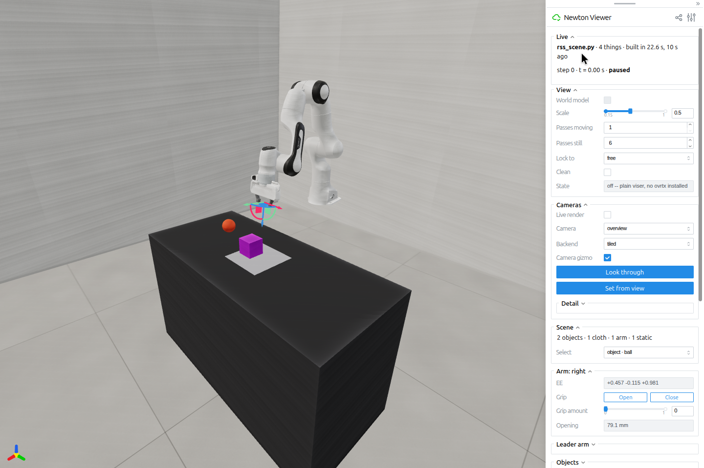
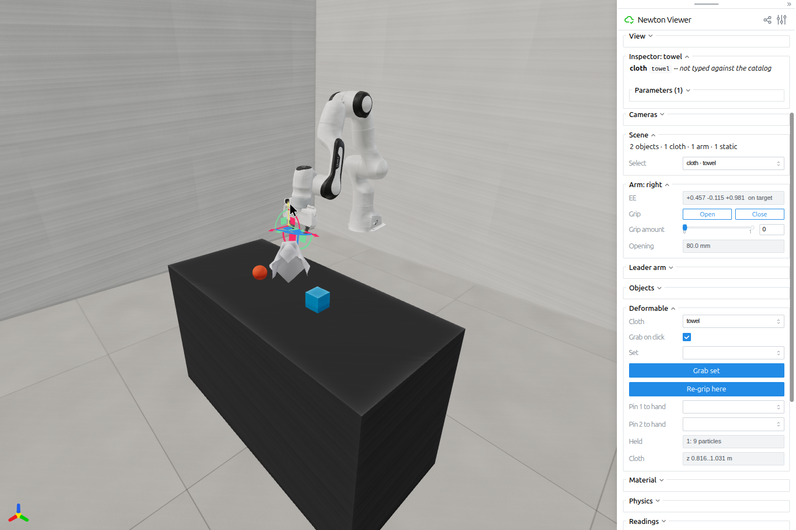
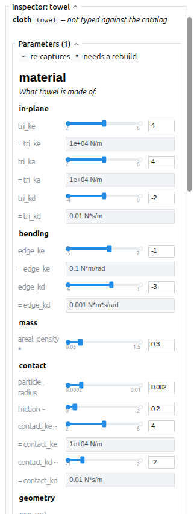
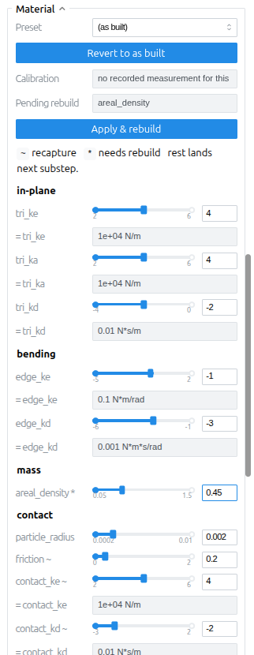
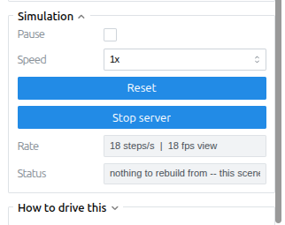
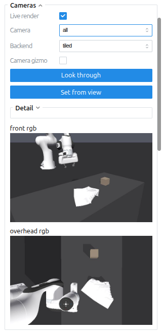

RoboSimStudio (RSS) combines a Python scene API with a browser-based interface for building and interacting with simulations. Researchers can construct a robot-and-cloth scene, manipulate objects, change physical parameters, and record simulation state without leaving the session. RSS already uses Newton as its primary physics backend. Integrating selected interaction and editing features would make these capabilities available to other Newton applications without requiring them to adopt RSS’s scene API or application structure.
Current implementation, simplified. Click a package to open its source. Arrows show construction and control flow; rendering updates also travel back to the browser. Open full-size diagram.Key implementation modules
Structured takes are distinct from browser appearance and offline video.
Recording semantics and rendering hooks need separate contracts.
Scene construction and robot controls
Users define a robot, a work surface, and the objects in a scene in Python. The studio then provides controls for moving the robot’s end effector and operating its gripper. These built-in controls reduce the setup code needed to turn a simulation example into an interactive experiment.
Scene stores the scene specifications, and build() uses them to create a Newton-backed Sim. Robot metadata identifies the controlled joints and tool frames. The studio uses that metadata to configure inverse kinematics (IK), which converts end-effector targets into joint positions, and to build the gripper controls.
RSS allows users to define positions relative to the work surface, but it returns simulation state in world coordinates. Its scene API also stores only one robot specification: adding another replaces the first, although a registered two-arm robot can occupy that slot. These are RSS conventions, not restrictions that Newton should adopt.

The supplied example builds a Panda, rigid objects, a 169-particle towel and a camera. Robot and scene setup remain editable Python.
Both APIs collect a scene description before constructing simulation data, but they return different objects. RSS stores named entities, poses relative to the workcell, and robot presets. Its compiler uses Newton builders and assigns groups of objects to solvers. These groups, called solver islands, can interact through a coupling mechanism. RSS wraps the resulting model, solver setup, controls, and cameras in a runnable Sim. By contrast, Newton’s ModelBuilder.finalize() returns a Model. The application chooses the solver, allocates state and control buffers, and runs the simulation loop.
Concern
RSS
Newton / application
Integration implication
Authoring
Scene.add(spec) stores specifications for named boxes, sheets, robots, and cameras. It returns named references for entities.
ModelBuilder assembles bodies, joints, shapes, particles, and imported assets.
RSS provides a higher-level authoring option. Newton users should be able to attach studio tools to an existing model without converting it into RSS specifications.
builder.finalize() → Model; model.state() and model.control() allocate runtime buffers.
A model and a runnable application are distinct products. Do not make finalize open a viewer or choose an application loop.
Solver choice and scheduling
ArrangementSpec assigns entity types to physics backends and specifies coupling, control rate, and substeps.
The application creates solvers and defines collision handling, the timestep, state-buffer swaps, and any multi-solver schedule.
RSS simplifies setup, but its solver assignments and coupling defaults are application choices. An integration must let applications retain their existing solver configuration and stepping sequence.
Control and observation
Sim.step(action,mode=...) selects a controller; observations come from providers. Robot presets supply tool frames and gripper conventions.
Control is simulation input data; examples or a learning framework interpret actions and assemble observations.
A common runtime must not prescribe an RL action space, gripper range or observation dictionary.
Viewer ownership
rss.view(sim) creates a StudioSession that drives the loop. rss.viewer(sim) supports a caller-owned loop.
An Example owns simulation resources; the example runner calls its step() and render().
Provide an attach mode as well as standalone RSS. Existing Example or Lab code must remain the sole step owner.
Rebuild and identity
Building the same Scene again rebinds its entity references to the new build. Two Sims from one Scene do not have independent references.
Body/particle indices and state buffers belong to a particular finalized model; reconstruction invalidates consumers’ cached references.
Record model generation, world and entity identity. Rebind panels, renderers, handles and agent requests together.
Task definition
TaskSpec adds instruction, evaluator, routine, variation and episode rules to scene fields. BuildRequest supplies the scene-only path.
Newton models describe physics. Task semantics live in application code, Lab, Arena or another framework.
Reuse scene construction without adopting RSS’s task representation or benchmark conventions.
Complete scene setup with cloth, solvers, and cameras
The example below defines a robot, cloth, a block, and two cameras, then builds the simulation and opens the studio. Inside build(), RSS creates Newton’s MuJoCo solver for the articulated robot and its vertex block descent (VBD) solver for the cloth and block. RSS’s default proxy coupling transfers interactions between those solver islands. The camera specifications define the views, and the camera panel creates a tiled renderer when needed. Setting share=False disables the public Viser tunnel.
importrobosimstudioasrssfromrobosimstudio_studioimportStudioConfig# GENERIC is an ArrangementSpec; backend names select solver factories.physics=rss.replace(rss.GENERIC,control_hz=60,substeps=8,backends=(("articulated",rss.backend("mujoco")),("*",rss.backend("vbd"))),)scene=rss.Scene(cell="bench_075",physics=physics,name="cloth-cameras")scene.add(rss.robot("panda"))scene.add(rss.sheet(name="towel",size=(0.32,0.32),cells=(18,18),at=(-0.16,-0.16,0.05)))scene.add(rss.box(name="block",half=(0.035,)*3,at=(0.02,0.25,0.06)))# Camera poses use world coordinates; `at` above is relative to the bench.scene.add(rss.CameraSpec(name="front",width=640,height=400,eye=(1.3,-0.7,1.2),look_at=(0.5,0,0.85)))scene.add(rss.CameraSpec(name="overhead",width=640,height=400,eye=(0.5,0.01,1.8),look_at=(0.5,0,0.8)))if__name__=="__main__":# build creates the Newton models, state/control, solver pipeline and warmup.sim=scene.build(control_mode="joint_position")print(sim.pipeline.program.summary())# Live camera panel owns its tiled renderer; the browser runs on Viser.rss.view(sim,panels="all",config=StudioConfig(live=True,port=8097),share=False)
The simulation contains 16 robot bodies in the MuJoCo island and one rigid body plus 361 cloth particles in the VBD island. Building it took about 21 seconds on the shared test machine. The configuration specifies 60 control steps per simulated second and eight physics substeps per control step, giving a physics timestep of 1/480 s. With live camera images enabled, the application ran at approximately 18–20 control steps per wall-clock second. These timings describe this scene on that host, not general RSS performance.
Users can select a cloth patch, create a manipulation handle, and move its target. The handle continues to hold the patch after they release the mouse, leaving them free to inspect the scene. RSS also supports rigid-body handles, multiple handles, linked movement, and explicit release. These controls help researchers prepare initial states or reproduce contact problems that would otherwise require repeated mouse input or a custom script.
The studio manages each handle’s target and its on-screen control, or gizmo. A rigid-body handle applies a damped force and torque toward the target. A particle handle selects nearby particles and stores their offsets relative to the handle. In spring mode, it adds forces before the solver runs. In pin mode, it sets particle positions and velocities after the solver runs. Fixed-size device buffers allow target updates without changing the GPU kernel’s launch dimensions.
Newton could reuse the persistent targets and particle selection to extend its existing rigid-body picking. The cloth lift shown below uses an external pin; it does not demonstrate a robot grasp or show that the robot can support the cloth after release.

The target remains active between mouse actions. A kinematic pin and a force-based drag have different physical effects and must be labeled clearly.
Select body / particle patch→Store a target→Apply force or pin each step→Release explicitly
For scripted particle selection, disable the nearest-particle fallback and check the returned selection count and distance. A convenient mouse interaction should not silently turn an agent’s missed grasp into a successful attachment.
Users can select an object, inspect its settings, change a material or solver parameter, and observe the response. RSS separates physical settings from visual effects such as rendered cloth thickness, color, and fuzz. It can also record simulation actions and state in a structured recording, called a take, as well as export images and videos.
Newton could reuse the parameter-update logic and the rules for notifying solvers when a value changes. Material presets and the full editing interface can remain in RSS. The current studio still requires source edits for some changes to script-authored scenes, and it does not provide a complete editor with undo or general saving and reloading through Universal Scene Description (USD).
Training data must distinguish robot actions from external assistance. In the 106-sample take, the cube rises about 18 cm while the recorded robot action barely changes because the user moves it with the mouse. A training-data exporter must record the external forces or pins and label assisted steps, or exclude those transitions. Take analysis · Analysis script.
Clicking a mesh selects an entity and opens its inspector. The inspector uses metadata to determine which parameters users can edit, their units and ranges, and how to apply changes. Cloth and rigid bodies therefore expose different controls. A separate Material panel provides presets and save and revert operations.

The cloth inspector generates controls from the entity’s editable parameters and field metadata.
The browser queues parameter changes. A Viser callback records the requested value. On the simulation thread, SpecBinder.drain() creates an updated immutable specification and calls the appropriate parameter writer. The browser callback does not write physics state directly.
Some edits update existing arrays. Cloth stretch and bend parameters update material arrays for the selected cloth’s triangles or edges. Later launches of a captured CUDA graph read those buffers. In the GUI test, changing log10 tri_ke from 4 to 4.3 changed the model value from 10,000 to 19,952.623 N/m without changing particle mass. The test confirmed the array update, but did not establish equivalence to a freshly built model or verify captured execution. Rigid-body, shape, and joint parameters use separate writers and solver notifications.
Fields marked with a tilde require graph recapture. Soft-contact stiffness, damping, and friction are Python scalar values passed into GPU kernels. A CUDA graph records kernel launches for later reuse, including these scalar arguments. The application must capture the graph again to use changed scalar values; uncaptured execution reads the new values directly. These contact fields affect the entire model, unlike the material arrays for an individual cloth.
Fields marked with an asterisk require a rebuild. Changes to density, geometry, or solver allocation can require new model and solver buffers. The interface lists these edits under “Pending rebuild.” For the tested Python-authored scene, “Apply & rebuild” instructed the user to edit the source script and did not apply the change. RSS also contains a task-backed reload path, but the public release withholds the task tier needed to validate it.
Saving a preset does not save the whole scene. “Save as preset file” writes a material record. Camera pose edits remain local to the session. Neither operation saves the complete scene, solver, controller, cameras, manipulation handles, and task in a portable document.

The Material panel marks density changes as requiring a rebuild.

The rebuild command rejects the structural edit and directs the user to the scene’s source script.
A Newton editing interface should identify each field’s scope, validate the requested value, and notify the affected solver. If an edit requires reconstruction, the application must provide a way to rebuild the model and reconnect every component that uses it. Each edit should either succeed completely or leave the current model unchanged. RSS’s panel layout can remain separate from these rules.
The inspector and Material panel currently maintain separate working specifications. After the inspector changed a value in the test, the Material panel still displayed the old value. Shared readback from the active model and a regression test should prevent that disagreement. Coding agents also need structured results that distinguish an applied edit from one that requires recapture, requires reconstruction, or is unsupported.
RSS: direct manipulation, tuning and recording 0:29 · 1–1.4× playback
A persistent handle lifts one cloth patch while the user inspects material controls, releases the cloth, and records a take. Playback speed varies as marked. The demonstration does not validate multiple simultaneous handles or an unassisted robot grasp.
Cloth manipulation with live camera images
A practitioner can arrange the cloth while checking whether two observation cameras can see the relevant fold or grasp point. RSS displays server-rendered RGB images inside Viser; selecting a camera, looking through it and changing its pose are part of the same session. A coding agent can use the same declared cameras to request observations, but benefits from explicit camera IDs and numerical state rather than the panel layout.
RSS: cloth handles and two camera views 0:10 · normal speed
A pin lifts a towel patch while the front and overhead camera images update. The user then switches to the overhead view and releases the pin. The cloth follows the target gradually because the pin limits movement during each physics substep.

The tiled renderer produces both camera images. These sensor views use a different rendering path from the main browser viewport.
PanelCamera uses the declared camera rig or creates a renderer through Sim.make_renderer(). It renders the current simulation state at a limited update rate and displays the images in Viser. “Look through” moves the browser camera to the selected camera’s pose. “Set from view” stores the current browser pose as a session-local override; a changed camera configuration causes the panel to rebuild its renderer. Available outputs include RGB, depth, and segmentation, depending on the backend.
The optional “World model” mode uses a separate rendering path. OVRTX renders an image from the browser camera’s pose, and Viser displays that image behind the interaction controls. This allows path-traced rendering without a browser-side path tracer. The demonstration covers tiled camera views, not the optional OVRTX integration. Cloth appearance settings in the browser do not automatically apply to sensor rendering.
Newton’s existing viewers and sensors could support the same camera selection, pose editing, and image display. Each image should identify its camera and simulation time, especially when rendering runs more slowly than the simulation. An integration should add only the missing public interfaces, rather than introduce a second renderer abstraction.
A researcher or coding agent can edit the scene file without closing the browser session. Commands can pause the simulation, run a specified number of steps, inspect its status, evaluate Python, and capture an image. If an edit fails, RSS keeps the previous scene available while the user corrects the source.
LiveServer watches the scene file, waits until edits stop, and builds a candidate scene. It replaces the active scene only after construction succeeds. SimBus queues local socket requests for the simulation thread to process between steps, so that thread remains responsible for changing simulation state. The process retains the browser connection and camera position during a rebuild.
In the live-session test, a command advanced exactly 12 steps, a syntax error left the old scene usable, and a valid edit loaded without changing the process or camera position. The session also returned an image from the tiled renderer. The warm rebuild took about 22.6 seconds on the shared test machine. These results establish the command and recovery behavior, but do not measure a productivity advantage over direct Python.
RSS: recovery from an invalid scene edit 0:08 · shortened sequence
The session runs a fixed number of steps, rejects an invalid edit, and loads a corrected scene. The clip omits the rebuild wait of about 22.6 seconds. Live-session example · Sensor image.
Viser provides the browser interface. Its Python API supplies a 3D view, GUI controls, transform gizmos, click callbacks, and camera access. Researchers can interact with a remote GPU simulation without developing a separate web application. Newton already uses Viser, which provides a common foundation for reusable controls. The host application still owns simulation stepping, physical edits, and saving state; it must also distinguish the browser view from sensor observations. Viser API ↗.
Feature matrix: 17 capabilities
The table compares RSS capabilities with existing Newton functionality and identifies the proposed integration boundary for each.
17 capabilities
Capability
RSS public implementation
Newton baseline
Engineering disposition
Browser visualization and controls
Viser studio with inspection, transport, appearance, cameras, and app panels.
Interactive ViewerViser provides pause/step/reset, example switching, GUI controls, scalar plots and images.
Use Newton’s viewer primitives; do not import duplicate transport widgets. Newton viewer ↗
Robot end-effector gizmos
IK and gripper controls wired from registered robot metadata.
Transform gizmos and existing IK examples cover the underlying interaction; Newton also has an experimental controllers package.
Viewer and sensor/rendering facilities already exist. Image display does not define a training dataset.
Borrow rendering APIs; avoid importing another sensor truth or camera ownership model. Studio video path ↗
Appearance / deformable presentation
Cloth visual thickness, shell/fuzz looks, finishes, lighting and procedural scenery.
RSS specializes Newton’s viewer; the baseline also provides batching and material handling.
Audit genuinely missing public rendering hooks; keep decorative assets and looks optional. Viewer specialization ↗
Rigid + deformable physics
Composes Newton MuJoCo, VBD, XPBD and other registered backends.
Newton already supplies multiphysics primitives, deformables, cables, controllers and coupled-solver work.
RSS’s ergonomic composition is distinct from new physics capability. Reuse existing solver contracts. Newton coupled solvers ↗
SuperDex / Genesis adapters
Both are already present; optional foreign-engine soft-body/cloth paths, host-side coupling and feedback shaping.
Optional cross-engine adapters are outside the viewer’s responsibility. Coupling needs separate numerical validation.
Keep experimental and opt-in; establish numerical acceptance tests before considering any core solver work. Engine adapters ↗
Task suite, goals and evaluation
Task-oriented types and seams exist, but benchmark-tier modules and runnable task suites are withheld from this release.
Arena supplies scene/embodiment/task composition, completion semantics, variations and evaluation.
Do not merge an uninspectable task runtime or commit Newton to a task DSL. Withheld components ↗
48-task gallery
Gallery includes unreleased capabilities; it is not a shipped executable benchmark suite.
A public gallery cannot establish validated executable task coverage.
Ask for reproducible released task artifacts before a task-level integration decision. Release scope ↗
Policy / dataset ecosystem
Policy integrations and dataset export are on the roadmap; raw takes already exist.
Lab and Arena own training, evaluation and data-conversion workflows.
Build explicit adapters to chosen formats; do not make a roadmap item a core dependency. RSS roadmap ↗
General scene editor / USD round trip
Source-driven construction, interactive manipulation, import and preset pieces. No complete editor save/undo/round-trip contract established.
Newton has USD import/schema primitives; Isaac Sim supplies a broader USD authoring application.
Position RSS as a lightweight task/scene workbench, not a demonstrated substitute for full authoring. Rebuild behavior ↗
2. Ecosystem and users
Newton provides physics and simulation data, while learning frameworks and scene editors manage broader application workflows. RSS overlaps with several of these tools, but its clearest role is a lightweight interface for interactive experiments. It can complement a learning framework or a full scene editor without adding either as a Newton dependency.
An intentionally approximate map of product emphasis. Blob size and overlap do not measure capability, maturity or compatibility. Projects can span all three areas. Open full-size diagram.
Project
Main role
What this means for RSS + Newton
Newton
Physics library, solver interfaces, model/state/control data, viewers and sensors.
Keep this as the common engine boundary. RSS adds application workflows. Public API ↗ · Viewer ↗
Genesis
A broader simulation platform with its own scene interface, physics and rendering.
RSS already has an optional Genesis bridge in the reviewed source. That does not prove equivalent behavior across engines. RSS bridge ↗ · Genesis overview ↗
SuperDex
A platform spanning a physics engine, robotics SDK, Studio authoring tools and Lab; Lab is described as an early preview.
RSS’s optional bridge is already present. SuperDex Studio also overlaps with the authoring role. Preserve an optional boundary and validate coupling separately. RSS bridge ↗ · SuperDex components ↗
Isaac Sim
A larger USD-based simulation, asset and sensor-authoring application.
The reviewed develop source includes Newton integration. RSS should exchange declared scene fields or attach through supported application hooks; it should not introduce a competing stage or simulation owner. Newton stage integration ↗
Isaac Lab
Robot-learning environments and an application-owned simulation lifecycle.
The reviewed develop architecture separates physics, rendering and visualization and exposes its owned Newton data. RSS controls should borrow those resources and use Lab’s lifecycle/notification rules. Backend architecture ↗ · Native Newton access ↗
Isaac Lab Arena
Composition of scenes, embodiments and tasks, plus evaluation and environment generation.
Keep goals, rewards, task predicates and episode semantics in Arena or another task layer. Its agentic generation pipeline is adjacent to RSS’s live editing loop. Environment builder ↗ · Agent generation ↗
The Isaac comparison describes the source interfaces in the recorded revisions of Lab and Sim’s develop branches and Arena’s main branch. Runtime compatibility with these applications remains untested. The optional Genesis and SuperDex bridges also require separate tests of numerical behavior; their presence in the source does not establish equivalence between engines.
Robotics practitioner
Setting up and debugging manipulation experiments
A researcher can arrange a cloth, perturb a grasp, inspect the result, and tune a parameter while keeping the scene in view. Persistent handles help create initial states that would be tedious to script.
These features suit small manipulation experiments. The surrounding application still needs to manage large-scale training, asset production, and dataset quality.
Coding agent
Inspecting and changing a running simulation
An agent needs named entities, numerical state, commands that run a specified number of steps, and recovery from failed edits. It can change Python directly and request images when appearance matters, without operating the 3D interface through mouse clicks.
RSS exposes many of these operations. Structured command results, explicit coordinate frames, detection of references to replaced objects, and repeatable batch evaluations would make them more reliable. A researcher can use the same session to inspect the agent’s work.
RSS does not implement a Model Context Protocol (MCP) server in the reviewed release. Its agent package uses local Unix-socket commands and Python evaluation rather than MCP tool discovery and calls. An adapter could expose these operations to MCP clients, but it would still need explicit rules for who controls the simulation, how reset works, and how commands report failures. Transport source ↗ · Available commands ↗ · MCP tool protocol ↗.
The ongoing Newton live MCP study ↗ explores a closely related approach: host a Newton example persistently, execute against it, and rebuild edited source. Its results suggest that benefits depend on the workload and that agents often prefer numerical evaluation to rendered images. That study is experimental and does not benchmark RSS. The engineering opportunity is to share lifecycle and execution machinery while allowing both a Viser front end and an MCP client.
Human controls and coding-agent commands should use the same Newton session, with the host application retaining control of its lifecycle. Task definitions and data exporters should remain in adapters so BEHAVIOR-style tasks, Isaac Lab, Arena, and other applications can retain their own conventions. RSS’s public task tier is incomplete, so its gallery and planned integrations do not provide a sufficient basis for choosing Newton’s core API. Public task boundary ↗ · RSS roadmap ↗.
3. Integration with Newton
The choice is how much software and responsibility Newton should absorb. A companion package can deliver the complete RSS workflow, while focused contributions improve Newton for every application that needs similar interactions.
The Newton comparison includes the interactive ViewerViser implementation in PR #3850 ↗, tested at revision 8bfd16eb8941.
Merge RSS wholesale into Newton
This imports a second scene facade, application loop, presets, recording conventions, device integrations and optional engine bridges alongside the physics library.
Users gain an included studio, but the core inherits unrelated dependencies, support expectations and overlapping APIs. The useful workflow does not require this coupling.
A separate companion repository
RSS can remain independently versioned, initially in its current home and potentially under the Newton organization once ownership and support are agreed.
This preserves the authors’ complete workflow and release cadence. Organization membership should follow a demonstrated maintenance contract, not substitute for one.
Integrate selected components
Contribute small interaction or lifecycle capabilities that both RSS and a native Newton example need. Start with persistent particle targets and missing public viewer hooks.
This complements the companion repository. Avoid copying panels piecemeal until a working integration shows which lower-level gaps actually remain.
The viewer supports IK target movement, pause and step controls, and collision inspection. RSS builds on these capabilities with persistent manipulation handles and scene editing. Playback runs at 1.2–1.4× normal speed.
Application structure: RSS, Example classes and USD
RSS, Newton examples, and ovnewton all need to construct simulations and expose them to tools. They organize those responsibilities differently. RSS manages scene loading, solver setup, stepping, reset, GUI callbacks, and recording. Newton’s Example convention defines a common simulation loop, while ovnewton connects USD scenes to Newton models. A shared application interface could let studio controls and coding agents work with any of these construction paths.
Existing mechanism
What it supplies
What it does not establish
Newton Example convention
A Python object with viewer, step() and render(); optional gui(ui) and test hooks. The runner handles viewer transport and example switching.
A portable scene/solver document, a general model-replacement protocol, or a task schema. Reset in the interactive browser reconstructs the example; it should not be assumed equivalent to every application’s own reset method.
RSS Scene / Sim
A scene recipe plus solver arrangement, controller setup, observation providers, reset/step/close and studio integration. compose and pipeline let callers change physics assembly or the executor.
A universal replacement for existing Newton loops. Its control assumptions, entity metadata and solver scheduling need adapters when the host already owns a model.
ovnewton internal main, 6 October
USD → ovstage → add_ovstage(builder,stage). The caller registers solver attributes, imports, performs preparation such as VBD coloring, finalizes, then attaches a stage binding. The example selects XPBD, MuJoCo or VBD. Limited surface-cloth import is present.
Automatic construction of an entire solver program from USD. The example’s solver factory, solver options and step loop are still Python application code. Its temporary VBD contact override explicitly anticipates more solver-specific PhysicsScene settings.
ovnewton multiple-scene branch
StageBinding.scenes maps PhysicsScene paths to per-scene bindings/models. Ownership follows USD simulationOwner. The application allocates a solver, state/control and collision pipeline per selected scene.
RSS-style interaction between solver islands. These are independent simulations; cross-scene joints are rejected and cross-scene objects do not contact each other.
Newton USD scene attributes
The schema resolver reads timestep-rate and maximum-iteration attributes, plus gravity and per-object physics properties. The USD importer returns physics_dt and max_solver_iterations metadata for the application to consume.
A complete application configuration: selecting several solver islands, their coupling/order, control rate, controllers, reset policy, cameras and arbitrary task evaluation requires additional semantics.
The ovnewton comparison covers internal main revision 3e6576c2e4dc and multiple-scene revision 1877c4902c98 (ovnewton #209 ↗). The links require repository access. These source-level findings do not establish runtime compatibility; the older public mirror also lacks these capabilities.
RSS and ovnewton both organize scene construction, but their scene divisions have different physical meanings. RSS’s MuJoCo and VBD islands exchange motion and contact effects through a coupler. In ovnewton, separate PhysicsScenes produce independent models. Placing an RSS robot and its cloth in different USD PhysicsScenes would remove their interaction unless the application explicitly coupled them. A common application interface must distinguish independent simulations from solver components that interact within one simulation.
Proposed common point: the application’s owned runtime. Python and USD remain valid construction paths; tools attach after construction. This does not require a second Scene graph in Newton. Open full-size diagram.
The existing Example convention provides a practical starting point. Keep its step() and render() methods, and add only the information tools need: access to the current model and state, a safe point for submitting edits between steps, reset and rebuild operations, and notification when references become invalid. Optional setup and close hooks, together with explicit viewer attachment, may be sufficient. Examples should not need to inherit RSS’s Sim, and Isaac Lab environments should retain their existing runner.
Newton and ovnewton should use a consistent description of solver configuration, separate from runtime buffers. That description needs solver types and options, timesteps and substeps, collision handling, and the order of coupled operations. It should define how explicit Python or command-line settings override USD defaults and reject unsupported combinations. Both construction paths should use Newton’s interpretation of physical materials and joints. Preserving the native USD/ovstage path also avoids losing visual materials or stage state during conversion to RSS specifications.
RSS already separates scene construction from task evaluation: BuildRequest and TaskSpec both implement the compiler’s SceneRequest protocol. The compiler uses their scene-construction fields, while task instructions, evaluators, scripted routines, episode variations, action conventions, and completion rules belong to the task layer. Newton should preserve this separation. Adopting the whole TaskSpec would introduce benchmark conventions into the engine API and overlap with Isaac Lab and Arena.
Validation should begin with the same small rigid-body scene built through Python and USD. Compare model properties, solver selection, timing, initial state, and reset behavior, then attach the same panel and bounded-step commands to both. Test rejected edits and successful rebuilds, including references to the old model, state-buffer swaps, and renderer updates. Repeat these checks in an existing Newton example and an Isaac Lab-owned runtime.
A subsequent cloth comparison should stay within ovnewton’s supported subset: an identity world transform, constant thickness, density-derived mass, and supported stretch and bend parameters. The two construction paths must agree on the mesh, mass, and material values before they can be considered equivalent for that case. RSS supports additional cloth fields that this comparison would not cover.
Proposed boundary · not yet implemented end to end
RSS studio controlsViser panels · selection · persistent targets
Agent interfaceCLI or MCP adapter · source edits · evaluations
↓ Commands identify the model generation, world and object
Application-owned Newton sessionOne step loop · validates changes · owns reset, rebuild and shutdown
↓ Public interfaces and explicit notifications
Newton model, state and solversForces · constraints · parameter changes
Viewer, sensors and observationsHuman feedback · numerical state · images
Task definitions, dataset conversion and optional foreign engines attach through separate adapters. RSS may own the application in standalone mode; Isaac Lab or another host keeps ownership when embedding controls.
Component integration details
The table separates reusable Newton engine, viewer, and application interfaces from features that should remain in an optional RSS package. The proposed Newton changes still need implementation and validation. Screenshots enlarge when selected.
RSS component and current behavior
What Newton would need
Recommended home / concrete check
Persistent rigid and cloth handles
A manipulation handle continues to hold a body or particle patch after the user releases the mouse. Rigid handles apply a damped force and torque; cloth handles use either spring forces or kinematic pins.
Extend existing picking with reusable particle-patch selection and persistent targets. Define coordinate frame, world, selected indices, force/pin mode and release behavior. Apply targets at the correct point before or after solving; widgets should submit commands rather than write state from callbacks.
Newton interaction primitives; RSS controls.
Implement only behavior also useful in a native Example. Check two independent patches, release/reset/disconnect, and rejection of targets from a replaced model. Keep robot and task assumptions out of the primitive.
Viewer extension
RSS subclasses the Viser viewer to render its cloth appearance and adds selection, gizmos and panels. It also reaches into private viewer state.
Use the existing ViewerViser.server for controls. Inventory the remaining overrides and private caches, then add narrowly scoped hooks for any missing model-replacement, rendering or cleanup operations. Establish when a control may submit work to the application’s step loop.
Small hooks in Newton’s viewer; studio layout and styling in RSS.
The first check is a working port through public interfaces, including repeated model replacement with no stale meshes or callbacks. A new general plugin framework is not a prerequisite.
Parameter tuning
Metadata generates the inspector’s sliders and units. Edits either update arrays, require graph recapture, or wait for a model rebuild; material presets add save/revert controls.
Identify whether each edit affects a selected object or the whole model, and whether it requires an array update, solver notification, graph recapture, or reconstruction. Return whether the edit was applied, remains pending, or was rejected. After a rebuild, reconnect state, controls, solvers, renderers, and selections to the new model. Values shown in the interface must match the active model.
Newton change contracts and examples; RSS inspector/presets.
Compare an edited model with a fresh build at the same settings, including captured execution. Test the observed inspector/Material-panel disagreement. Hand-written scenes need an explicit rebuild recipe before the GUI can promise structural edits.
Live scene and agent host
A file watcher builds candidate scenes, retains the previous scene after an invalid edit, and accepts local commands for stepping, inspection and snapshots.
Let tools attach to an existing Example or application-owned runtime. Define bounded stepping, reset versus rebuild, current-state access and model-generation checks. Use one command queue and one simulation owner. Typed results should expose failures and pending edits to a CLI or MCP adapter.
Keep the host in the companion package initially.
Move lifecycle hooks into Newton only after another application can reuse them. Demonstrate failed-edit recovery and successful reconstruction in a native Newton application without requiring RSS Scene. Coordinate with the MCP work; the RSS command server does not itself implement MCP.
Scene recipes, robot presets and appearance
Scene combines named assets, workcell poses, robot tool/gripper metadata and solver arrangement; build() returns a runnable Sim. Visual presets add browser appearance.
Reuse ModelBuilder/importers and the Example lifecycle. Coordinate solver configuration with ovnewton’s construction path, keeping authored settings separate from runtime buffers. Define which identities, units and fields survive save/load; avoid a second mandatory scene graph or task vocabulary.
RSS/asset packages for authoring convenience.
A small shared application structure may belong in Newton once Python and USD consumers need it. First compare the same scene’s model, solver settings and reset through both paths. Browser appearance is not automatically a physical or sensor material.
Camera views and observations
The studio manages camera poses and shows tiled or optional RTX renders inside Viser. “Look through” moves the browser view; pose edits are session-local.
Connect the workflow to existing viewer and sensor facilities. Pass camera identity, pose/frame, resolution and simulation timestamp with each image. Distinguish an edited preview rig from task observations, and recreate or rebind camera resources when their model changes.
Camera editor in RSS; public image/camera hooks in Newton only where missing.
Check that a pose edit changes the intended view, reset restores declared poses, and snapshots identify the state they depict. Validate inside an application that already owns its renderer before adding another renderer abstraction.
Recording and task data
RSS records actions and simulation state in structured takes; image/video export is a separate operation. A take can include motion caused by human pins or forces.
Expose consistent step/state access and intervention events. Specify whether actions, observations and images refer to before or after each step; identify resets and model changes. Record external assistance so it cannot be mistaken for behavior produced by the robot action alone.
Companion recorder and dataset adapters.
Keep rewards, goals, BEHAVIOR predicates and Lab/Arena episode semantics above Newton. First replay or inspect a take containing a pin and a reset; verify time alignment and assistance labels before calling an export policy-training data.
Teleoperation and foreign-engine bridges
Optional adapters turn device inputs into robot commands or connect cloth/soft-body simulation to Genesis and SuperDex. These have different maintenance and validation needs.
Use explicit controller commands and define which client owns each device’s controls. For coupling to another engine, specify coordinate frames, timesteps, exchanged contact data, and any modification or limiting of reaction forces. Keep these dependencies optional. Capping a feedback force may help stability, but does not establish physically accurate coupling.
Separate device/engine packages.
Device disconnect must release its controls. Engine bridges need impulse/contact and timestep-refinement checks. Neither should be required to install Newton or use the RSS tools on a Newton-only scene.
The native Newton panel example demonstrates part of the proposed interface. It accesses the public Viser server, queues a button command for the simulation thread, and rejects commands that refer to an old model generation. Its CPU, CUDA, and browser checks passed. It does not constitute a complete RSS port or a stable plugin API. CPU log · CUDA log · Browser log.
RSS and a native Newton example should both validate the shared interaction features. An Isaac Lab adapter should then use those features on Lab’s existing Newton model without creating a second model, simulation loop, or reset policy. Lab already exposes its model, state, control, and change notifications for external use; the adapter should follow those ownership and update rules. Lab ownership and mutation rules ↗.
4. Recommendations and next steps
Newton should integrate reusable interaction and editing features, starting with persistent manipulation handles and safe parameter updates. These features should work in ordinary Newton examples and through Python, allowing RSS to use the same implementation. Updating RSS’s Newton dependency remains routine maintenance rather than a separate integration milestone.
The first two contributions would let users arrange a scene and tune its physics without writing custom controls for each example. Both require a way to apply commands safely on the simulation thread. Shared application conventions, camera previews, and recording can follow once those interfaces are clear; the initial work does not require a new application framework.
1
First contribution · Newton interaction utilities and viewer controls
Persistent rigid-body and cloth manipulation
Users should be able to select two cloth corners, move them independently, leave them held while inspecting the scene, and then release them. Python scripts should support the same operations without a browser.
Extend Newton’s existing rigid-body picking with particle-patch selection, multiple persistent targets, and explicit operations to create, update, and release each handle. Reuse Newton’s force-dragging behavior and adapt RSS’s particle-selection, spring, and pin mechanisms. Keep the target data and physical operations independent of Viser, with viewer controls that call the same interface as Python scripts.
Each target should identify its coordinate frame, world, selected indices, and model generation—a version identifier that changes when the application replaces the model. Apply forces before solving and enforce kinematic pins afterward. Use fixed-capacity target buffers so moving a handle does not require graph recapture. The application’s step loop must process commands. Reset and model replacement must invalidate old targets, and a disconnected client must release its controls.
Acceptance criteria. A native Newton example and a headless test can both manipulate two cloth patches and a rigid body. Releasing a handle leaves no residual pin or force, and stale commands cannot affect a rebuilt model. Tests cover CPU, CUDA, and captured execution. Where batching is supported, manipulating one world leaves the others unchanged.
Next contribution · Newton parameter updates and a small inspector example
Safe inspection and editing of simulation parameters
When users change a cloth material or joint gain, the interface should identify the affected object, show whether the new value is active, and explain whether reconstruction is necessary. Coding agents should receive the same information in a structured result.
Document an editing path for a small set of supported fields, starting with VBD cloth material values and joint gains for a specified solver. Reuse ModelFlags and SolverBase.notify_model_changed(), and add field-level validation, explicit scope, consistent readback, and coordination of solver refresh, graph recapture, and rebuild. The required action depends on both the field and the solver; RSS’s three edit categories provide a starting point, not a universal classification.
Validate each request before writing to the model. Return whether the edit was applied, remains pending, or was rejected, together with the effective value and any required action. Structural edits need an application-provided rebuild callback; without one, the interface should report them as unsupported. Panels and agents should read values from the active model so they cannot silently disagree. A minimal Newton inspector can use existing UI callbacks while RSS keeps its richer panels and preset library.
Acceptance criteria. Each supported edit produces behavior that matches a fresh build at the same settings within stated tolerances, including captured execution. Invalid edits leave the model unchanged. The interface labels model-wide fields clearly, and GUI and Python readbacks agree. These checks address the disagreement between RSS’s inspector and Material panel.
Shared design work · Newton examples, ovnewton and application owners
Application lifecycle and solver configuration
The same editing tools should attach to a Python-built Newton example or a USD-loaded scene without requiring rss.Scene or transferring control of the simulation loop to the studio.
Use the first two contributions to establish an optional application convention. Tools need access to the current model, state, control, and solver; a safe point for processing commands; reset and rebuild callbacks; and notification when the application replaces resources. State access must follow buffer swaps, while model-generation identifiers allow tools to reject stale selections, queued commands, and camera bindings. Start with small helpers around the existing Example convention and require a second application to use them before introducing a public application class.
Define solver configuration separately from running resources, in coordination with ovnewton: solver choice and supported options, timestep/substeps and collision policy. Python and USD construction should use the same interpretation and explicit override precedence. Start with one solver per simulation; add coupled solver schedules only when their ownership and stepping semantics are specified. Reuse existing USD fields and define schemas/import coverage for new authored physics settings. Keep task goals, rewards, controllers and benchmark vocabulary outside this contract.
Acceptance criteria. Equivalent Python- and USD-built rigid-body scenes agree on model properties, solver settings, initial state, and reset behavior, and both accept the same tools. Failed rebuilds leave the application usable; successful rebuilds reconnect every dependent component. An Isaac Lab adapter uses Lab’s existing runtime without creating a second loop. The next test covers ovnewton’s supported cloth subset.
Follow-on · Newton sensor/viewer hooks; optional recorder and studio panels
Camera previews and recording of interventions
Add a small Newton example that displays images from existing camera sensors in ViewerViser. Introduce public hooks for camera updates and model replacement only where existing interfaces are insufficient. Each observation should identify its camera, world, coordinate frame, simulation step, and time. Use SensorTiledCamera or the application’s renderer, and keep browser views distinct from sensor observations.
Expose handle create/move/release, parameter edits and reset/model-change events alongside step/state access. An optional recorder can then identify externally assisted motion and align it with actions and images. RSS can contribute its camera panel and take recorder; dataset formats and task semantics remain adapters above Newton. This work can proceed once the lifecycle and event boundaries are agreed.
Acceptance criteria. The cloth example displays two synchronized camera images. A scripted pose edit changes the intended camera, and reset or rebuild restores or explicitly replaces the camera rig. A recorded take identifies every pin and reset and states whether each observation precedes or follows its associated action.
The initial work should produce two focused Newton contributions: persistent manipulation with a native cloth example, and validated parameter edits with a minimal inspector. RSS can provide a reference implementation and serve as the first external user. In parallel, ovnewton and Isaac Lab maintainers should review the application hooks, using these examples to determine the minimum shared API. Each contribution should deliver a working Newton capability with regression tests.
RSS’s scene-authoring conveniences, presets, file watcher, richer GUI, task definitions, dataset exporters, and Genesis/SuperDex bridges should remain optional. A companion repository can maintain them independently; whether that repository belongs under the Newton organization is a separate ownership decision. This division gives researchers and coding agents reusable tools without making Newton depend on a particular scene or task framework.
Implementation checks and current evidence
Check
Required experiment
Existing evidence / remaining gap
Interaction lifecycle
Drag, disconnect, reset/rebuild, reconnect, then send an old callback.
Native prototype rejects stale commands. Reusable Newton handle and rebuild APIs remain proposed work.
Cloth manipulation
Manipulate two independent patches, link their motion, and vary the release order. Test a robot grasp after releasing every pin.
The demonstration covers one persistent patch. Multiple-patch behavior and unassisted grasping still need validation.
Parameter correctness
Compare an edited model with an equivalent fresh build; check solver refresh, recapture and all affected state buffers.
Live material writes and pending rebuild behavior were probed. Fresh-build equivalence and captured execution were not measured.
Agent authoring
Run a fixed number of steps, reject an invalid edit, load a valid edit, preserve the camera, and return structured status and an image.
The live-session test passed the stepping, recovery, reload, and image checks. A shared command-result schema remains proposed work.
Multiple worlds
Select one of N worlds, reset selected worlds, and verify all others remain unchanged.
Not covered. Required before claiming support for batched applications.
Cameras and recording
Edit/reset the camera rig; identify image step/time, pins, model changes and observation/action timing.
Two tiled camera views and a raw take were captured. Synchronized intervention-aware recording was not established.
Observed timings only on a shared GPU; no controlled comparative benchmark.
Application and solver configuration
Compare Python and USD construction, reset and failed/successful rebuild; attach to a Lab-owned runtime.
Source-level overlap was analyzed. Equivalent runtime behavior and the Lab adapter were not executed.
Evidence, runnable examples and limitations
The tests cover RSS scene construction, interactive controls, live editing, camera images, and a native Newton viewer example. They establish specific behavior in those configurations, not general physical accuracy or compatibility across applications. The Isaac and ovnewton comparisons describe source-level interfaces; their runtime integration remains untested.
908RSS fast-tier tests · OK, 19 skipped Original log
165RSS medium-tier tests · OK, 14 skipped Original log
Suite totals are those reported by the runners, including skipped tests. RSS’s fast suite includes structural checks and stubs; these numbers are not counts of validated physical phenomena.
The step counter advances from 815 to 827. The session retains the old scene after an invalid edit, loads a corrected scene without restarting, preserves the camera, and returns an image from the tiled renderer.
The example assigns objects to MuJoCo and VBD, displays two 640×400 camera views, and supports cloth pinning and release. Tests confirm a live material edit and rejection of an unsupported structural rebuild.
Startup latency and an unresolved viewer error. The first mixed-scene build took about 280 seconds, and first-use IK compilation blocked simulation-thread commands for about 75 seconds. These shared-host timings do not establish typical latency. Toggling a Newton joint overlay also produced NaN bounding-sphere errors. The test did not isolate the cause against the base revision, so it does not establish a regression. IK trace · Overlay probe.
Runtime coverage. The RSS studio tests used its resolved Newton dependencies, and six characterization tests also ran on Newton 1.6.1. The native viewer prototype used the interactive Newton revision identified above. These checks do not certify the entire RSS application on that development revision. They also do not cover Isaac applications, physical teleoperation devices, the optional RTX renderer, or other physics engines. The public release does not provide the complete task benchmark, executable 48-task suite, or policy exporter needed to validate those capabilities.
Implementation links identify the reviewed source revisions. Product documentation and the related MCP study provide additional context for the ecosystem comparison.